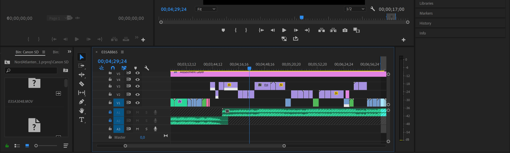

Øvelse i at lave interviewvideo med B-roll og lyd.

Formålet med denne opgave, er at få kendskab til Adobe Premire Pro og til optagelse af lyd. Det er en øvelse inden næste opgave, der indeholder en profilvideo. Vi udviklede ikke et storyboard i en traditionel forstand, men mere end liste af idéer og shots vi gerne ville filme.
Establishment-shot af lejligheden
Kaffe B-roll
Tegnnings B-roll
Headshot af Julie
Mix af close up og medium shots
Jeg filmede og styrede lyset. Vi havde sat op ved siden af et stort vindue for at få så meget naturligt lys som muligt, men havde en lille softbox med for at give komplimenterende fill-light hvis nødvendigt.